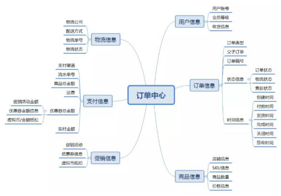
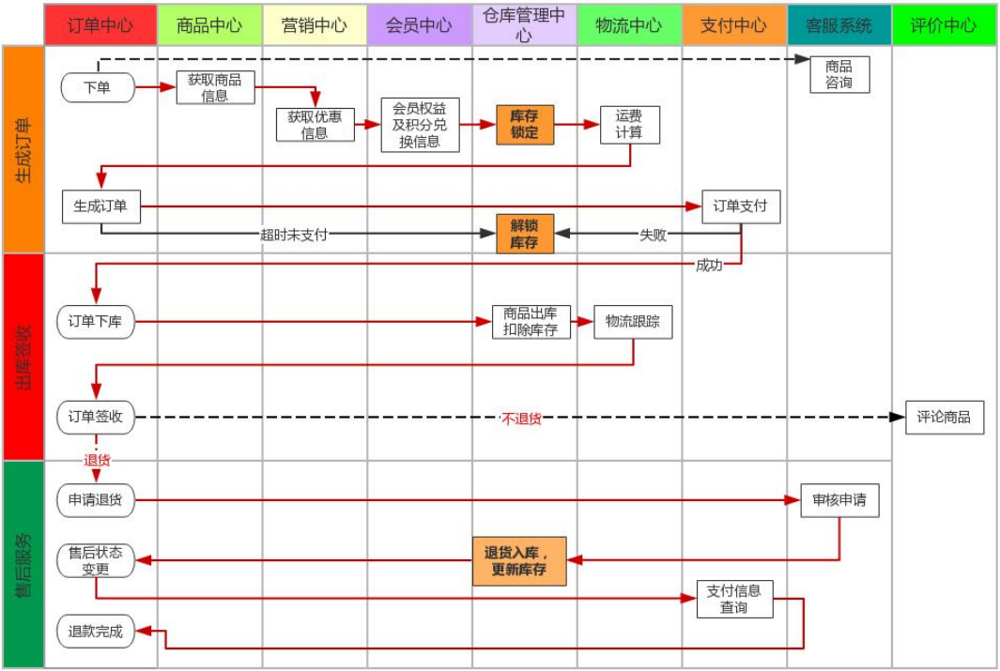
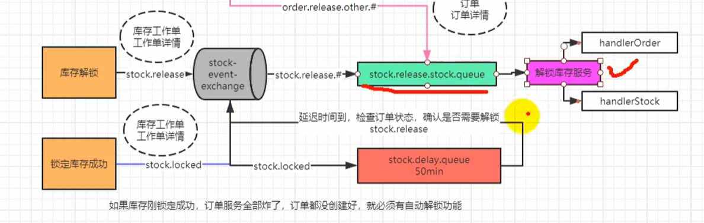
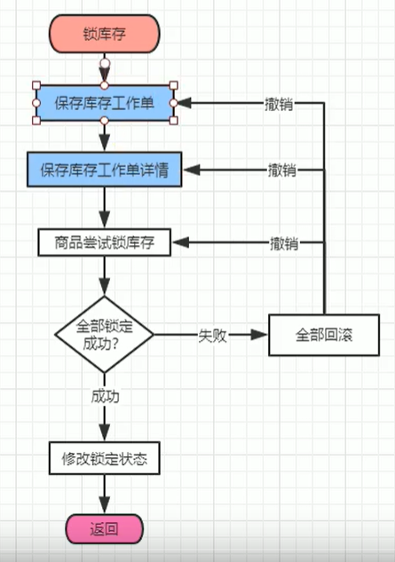
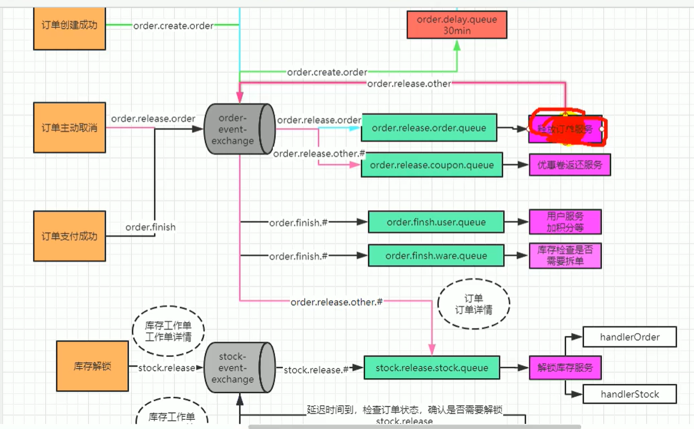
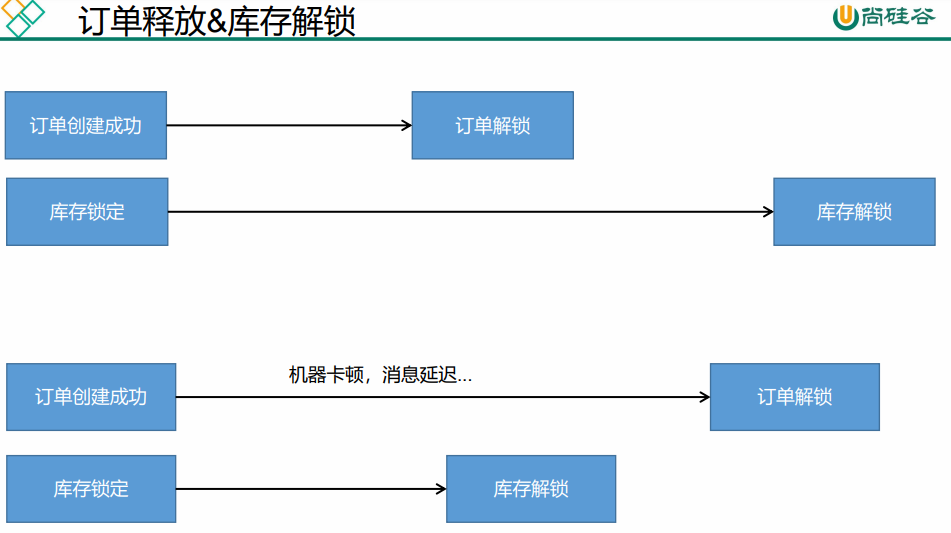

# 订单
# 1、订单中心
电商系统涉及到 3 流，分别时信息流，资金流，物流，而订单系统作为中枢将三者有机的集合起来。
订单模块是电商系统的枢纽，在订单这个环节上需求获取多个模块的数据和信息，同时对这些信息进行加工处理后流向下个环节，这一系列就构成了订单的信息流通。
# 2、订单构成

# 1、用户信息
用户信息包括用户账号、用户等级、用户的收货地址、收货人、收货人电话等组成，用户账 户需要绑定手机号码，但是用户绑定的手机号码不一定是收货信息上的电话。用户可以添加 多个收货信息，用户等级信息可以用来和促销系统进行匹配，获取商品折扣，同时用户等级 还可以获取积分的奖励等
# 2、订单基础信息
订单基础信息是订单流转的核心，其包括订单类型、父 / 子订单、订单编号、订单状态、订 单流转的时间等。
（1）订单类型包括实体商品订单和虚拟订单商品等，这个根据商城商品和服务类型进行区 分。
（2）同时订单都需要做父子订单处理，之前在初创公司一直只有一个订单，没有做父子订 单处理后期需要进行拆单的时候就比较麻烦，尤其是多商户商场，和不同仓库商品的时候， 父子订单就是为后期做拆单准备的。
（3）订单编号不多说了，需要强调的一点是父子订单都需要有订单编号，需要完善的时候 可以对订单编号的每个字段进行统一定义和诠释。
（4）订单状态记录订单每次流转过程，后面会对订单状态进行单独的说明。
（5）订单流转时间需要记录下单时间，支付时间，发货时间，结束时间 / 关闭时间等等
# 3、商品信息
商品信息从商品库中获取商品的 SKU 信息、图片、名称、属性规格、商品单价、商户信息 等，从用户下单行为记录的用户下单数量，商品合计价格等。
# 4、优惠信息
优惠信息记录用户参与的优惠活动，包括优惠促销活动，比如满减、满赠、秒杀等，用户使 用的优惠券信息，优惠券满足条件的优惠券需要默认展示出来，具体方式已在之前的优惠券 篇章做过详细介绍，另外还虚拟币抵扣信息等进行记录。
为什么把优惠信息单独拿出来而不放在支付信息里面呢？
因为优惠信息只是记录用户使用的条目，而支付信息需要加入数据进行计算，所以做为区分。
# 5. 支付信息
（1）支付流水单号，这个流水单号是在唤起网关支付后支付通道返回给电商业务平台的支 付流水号，财务通过订单号和流水单号与支付通道进行对账使用。
（2）支付方式用户使用的支付方式，比如微信支付、支付宝支付、钱包支付、快捷支付等。 支付方式有时候可能有两个 —— 余额支付 + 第三方支付。
（3）商品总金额，每个商品加总后的金额；运费，物流产生的费用；优惠总金额，包括促 销活动的优惠金额，优惠券优惠金额，虚拟积分或者虚拟币抵扣的金额，会员折扣的金额等 之和；实付金额，用户实际需要付款的金额。
用户实付金额 = 商品总金额 + 运费 - 优惠总金额
# 6. 物流信息
物流信息包括配送方式，物流公司，物流单号，物流状态，物流状态可以通过第三方接口来 获取和向用户展示物流每个状态节点。
# 3、订单状态
# 1. 待付款
用户提交订单后，订单进行预下单，目前主流电商网站都会唤起支付，便于用户快速完成支 付，需要注意的是待付款状态下可以对库存进行锁定，锁定库存需要配置支付超时时间，超 时后将自动取消订单，订单变更关闭状态。
# 2. 已付款 / 待发货
用户完成订单支付，订单系统需要记录支付时间，支付流水单号便于对账，订单下放到 WMS 系统，仓库进行调拨，配货，分拣，出库等操作。
# 3. 待收货 / 已发货
仓储将商品出库后，订单进入物流环节，订单系统需要同步物流信息，便于用户实时知悉物 品物流状态
# 4. 已完成
用户确认收货后，订单交易完成。后续支付侧进行结算，如果订单存在问题进入售后状态
# 5. 已取消
付款之前取消订单。包括超时未付款或用户商户取消订单都会产生这种订单状态。
# 6. 售后中
用户在付款后申请退款，或商家发货后用户申请退换货。
售后也同样存在各种状态，当发起售后申请后生成售后订单，售后订单状态为待审核，等待 商家审核，商家审核通过后订单状态变更为待退货，等待用户将商品寄回，商家收货后订单 状态更新为待退款状态，退款到用户原账户后订单状态更新为售后成功。
# 4、订单流程
订单流程是指从订单产生到完成整个流转的过程，从而行程了一套标准流程规则。而不同的 产品类型或业务类型在系统中的流程会千差万别，比如上面提到的线上实物订单和虚拟订单 的流程，线上实物订单与 O2O 订单等，所以需要根据不同的类型进行构建订单流程。
不管类型如何订单都包括正向流程和逆向流程，对应的场景就是购买商品和退换货流程，正 向流程就是一个正常的网购步骤：订单生成–> 支付订单–> 卖家发货–> 确认收货–> 交易成功。 而每个步骤的背后，订单是如何在多系统之间交互流转的，可概括如下图

# 1、订单创建与支付
(1) 、订单创建前需要预览订单，选择收货信息等
(2) 、订单创建需要锁定库存，库存有才可创建，否则不能创建
(3) 、订单创建后超时未支付需要解锁库存
(4) 、支付成功后，需要进行拆单，根据商品打包方式，所在仓库，物流等进行拆单
(5) 、支付的每笔流水都需要记录，以待查账
(6) 、订单创建，支付成功等状态都需要给 MQ 发送消息，方便其他系统感知订阅
# 2、逆向流程
(1) 、修改订单，用户没有提交订单，可以对订单一些信息进行修改，比如配送信息，
优惠信息，及其他一些订单可修改范围的内容，此时只需对数据进行变更即可。
(2) 、订单取消，用户主动取消订单和用户超时未支付，两种情况下订单都会取消订
单，而超时情况是系统自动关闭订单，所以在订单支付的响应机制上面要做支付的
限时处理，尤其是在前面说的下单减库存的情形下面，可以保证快速的释放库存。
另外需要需要处理的是促销优惠中使用的优惠券，权益等视平台规则，进行相应补
回给用户。
(3) 、退款，在待发货订单状态下取消订单时，分为缺货退款和用户申请退款。如果是
全部退款则订单更新为关闭状态，若只是做部分退款则订单仍需进行进行，同时生
成一条退款的售后订单，走退款流程。退款金额需原路返回用户的账户。
(4) 、发货后的退款，发生在仓储货物配送，在配送过程中商品遗失，用户拒收，用户
收货后对商品不满意，这样情况下用户发起退款的售后诉求后，需要商户进行退款
的审核，双方达成一致后，系统更新退款状态，对订单进行退款操作，金额原路返
回用户的账户，同时关闭原订单数据。仅退款情况下暂不考虑仓库系统变化。如果
发生双方协调不一致情况下，可以申请平台客服介入。在退款订单商户不处理的情
况下，系统需要做限期判断，比如 5 天商户不处理，退款单自动变更同意退款。
# 3、幂等性处理
参照幂等性文档
# 订单业务
# 代码
# 配置拦截器
因为没有用权限框架，所以获取判断是否登录，并把登录信息存到 ThreadLocal 中
@Configuration | |
public class OrderWebConfiguration implements WebMvcConfigurer { | |
@Autowired | |
LoginUserInterceptor loginUserInterceptor; | |
@Override | |
public void addInterceptors(InterceptorRegistry registry) { | |
registry.addInterceptor(loginUserInterceptor).addPathPatterns("/**"); | |
} | |
} |
@Component | |
public class LoginUserInterceptor implements HandlerInterceptor { | |
public static ThreadLocal<MemberResponseVo> loginUser = new ThreadLocal<>(); | |
@Override | |
public boolean preHandle(HttpServletRequest request, HttpServletResponse response, Object handler) throws Exception { | |
MemberResponseVo attribute = (MemberResponseVo) request.getSession().getAttribute(AuthServerConstant.LOGIN_USER); | |
if (attribute != null) { | |
// 只有登录了才能访问 | |
loginUser.set(attribute); | |
return true; | |
} | |
// 没登陆就去登录 | |
request.getSession().setAttribute("msg", "请先登录！"); | |
response.sendRedirect("http://auth.gulimall.com/login.html"); | |
return false; | |
} | |
} |
# 订单确认实体
public class OrderConfirmVo { | |
@Getter @Setter | |
/** 会员收获地址列表 **/ | |
List<MemberAddressVo> memberAddressVos; | |
@Getter @Setter | |
/** 所有选中的购物项 **/ | |
List<OrderItemVo> items; | |
/** 发票记录 **/ | |
@Getter @Setter | |
/** 优惠券（会员积分） **/ | |
private Integer integration; | |
/** 防止重复提交的令牌 **/ | |
@Getter @Setter | |
private String orderToken; | |
@Getter @Setter | |
Map<Long,Boolean> stocks; | |
public Integer getCount() { | |
Integer count = 0; | |
if (items != null && items.size() > 0) { | |
for (OrderItemVo item : items) { | |
count += item.getCount(); | |
} | |
} | |
return count; | |
} | |
/** 订单总额 **/ | |
//BigDecimal total; | |
// 计算订单总额 | |
public BigDecimal getTotal() { | |
BigDecimal totalNum = BigDecimal.ZERO; | |
if (items != null && items.size() > 0) { | |
for (OrderItemVo item : items) { | |
// 计算当前商品的总价格 | |
BigDecimal itemPrice = item.getPrice().multiply(new BigDecimal(item.getCount().toString())); | |
// 再计算全部商品的总价格 | |
totalNum = totalNum.add(itemPrice); | |
} | |
} | |
return totalNum; | |
} | |
/** 应付价格 **/ | |
//BigDecimal payPrice; | |
public BigDecimal getPayPrice() { | |
return getTotal(); | |
} | |
} |
# 订单业务代码
@Override | |
public OrderConfirmVo confirmOrder() throws ExecutionException, InterruptedException { | |
OrderConfirmVo confirmVo = new OrderConfirmVo(); | |
// 1 获取登录人 | |
MemberResponseVo vo = LoginUserInterceptor.loginUser.get(); | |
// 获取请求 | |
RequestAttributes requestAttributes = RequestContextHolder.getRequestAttributes(); | |
CompletableFuture<Void> f1 = CompletableFuture.runAsync(() -> { | |
// 每个线程都共享之前过来的请求 | |
RequestContextHolder.setRequestAttributes(requestAttributes); | |
// 2 远程调用查询收货地址列表 | |
List<MemberAddressVo> address = memberFeignService.getAddress(vo.getId()); | |
confirmVo.setMemberAddressVos(address); | |
}, executor); | |
CompletableFuture<Void> f2 = CompletableFuture.runAsync(() -> { | |
// 每个线程都共享之前过来的请求 | |
RequestContextHolder.setRequestAttributes(requestAttributes); | |
// 3 远程调用查询购物车所选购物项 | |
List<OrderItemVo> items = cartFeignService.getCurrentCartItems(); | |
confirmVo.setItems(items); | |
}, executor); | |
// 4 查询用户积分 | |
Integer integration = vo.getIntegration(); | |
confirmVo.setIntegration(integration); | |
// 5 其他数据自动计算 | |
// 6 todo 防重令牌 | |
CompletableFuture.allOf(f1,f2).get(); | |
return confirmVo; | |
} |
# Feign 远程丢失请求头
@Configuration | |
public class MyFeignConfig { | |
/** | |
* 配置 feign 拦截器，添加 RequestInterceptor，把传过来的请求头 | |
* 转给 feign 远程调用带过去，源码会遍历 RequestInterceptor 集合调用 apply（）方法 | |
* @return | |
*/ | |
@Bean | |
public RequestInterceptor requestInterceptor(){ | |
return requestTemplate -> { | |
ServletRequestAttributes requestAttributes = (ServletRequestAttributes) RequestContextHolder.getRequestAttributes(); | |
HttpServletRequest request = requestAttributes.getRequest(); | |
String cookie = request.getHeader("Cookie"); | |
requestTemplate.header("Cookie", cookie); | |
}; | |
} | |
} |
# Feign 异步模式丢失上下文
原因：因为开启异步多线程，当前请求走的是一个请求的线程，路过 feign 调用开启的异步线程与请求线程不一样，所以我们可以通过传递请求的方式解决，否则 feign 拦截的 request 请求将为 null
解决
// 获取请求 | |
RequestAttributes requestAttributes = RequestContextHolder.getRequestAttributes(); | |
CompletableFuture<Void> f1 = CompletableFuture.runAsync(() -> { | |
// 每个线程都共享之前过来的请求 | |
RequestContextHolder.setRequestAttributes(requestAttributes); | |
// 2 远程调用查询收货地址列表 | |
List<MemberAddressVo> address = memberFeignService.getAddress(vo.getId()); | |
confirmVo.setMemberAddressVos(address); | |
}, executor); |
# 订单解决幂等性
@Override | |
public OrderConfirmVo confirmOrder() throws ExecutionException, InterruptedException { | |
OrderConfirmVo confirmVo = new OrderConfirmVo(); | |
// 1 获取登录人 | |
MemberResponseVo vo = LoginUserInterceptor.loginUser.get(); | |
// 获取请求 | |
RequestAttributes requestAttributes = RequestContextHolder.getRequestAttributes(); | |
CompletableFuture<Void> f1 = CompletableFuture.runAsync(() -> { | |
// 每个线程都共享之前过来的请求 | |
RequestContextHolder.setRequestAttributes(requestAttributes); | |
// 2 远程调用查询收货地址列表 | |
List<MemberAddressVo> address = memberFeignService.getAddress(vo.getId()); | |
confirmVo.setMemberAddressVos(address); | |
}, executor); | |
CompletableFuture<Void> f2 = CompletableFuture.runAsync(() -> { | |
// 每个线程都共享之前过来的请求 | |
RequestContextHolder.setRequestAttributes(requestAttributes); | |
// 3 远程调用查询购物车所选购物项 | |
List<OrderItemVo> items = cartFeignService.getCurrentCartItems(); | |
confirmVo.setItems(items); | |
}, executor).thenRunAsync(() -> { | |
List<OrderItemVo> items = confirmVo.getItems(); | |
// 获取全部商品的 id | |
List<Long> skuIds = items.stream().map(itemVo -> itemVo.getSkuId()).collect(Collectors.toList()); // 远程查询商品库存信息 | |
R skuHasStock = wmsFeignService.getSkuHasStock(skuIds); | |
List<SkuStockVo> skuStockVos = skuHasStock.getData("data", new TypeReference<List<SkuStockVo>>() {}); | |
if (skuStockVos != null && skuStockVos.size() > 0) { | |
// 将 skuStockVos 集合转换为 map | |
Map<Long, Boolean> skuHasStockMap = skuStockVos.stream().collect(Collectors.toMap(SkuStockVo::getSkuId, SkuStockVo::getHasStock)); | |
confirmVo.setStocks(skuHasStockMap); | |
} | |
},executor); | |
// 4 查询用户积分 | |
Integer integration = vo.getIntegration(); | |
confirmVo.setIntegration(integration); | |
// 5 其他数据自动计算 | |
// 6 todo 防重令牌 --------------------- | |
String token = UUID.randomUUID().toString(); | |
redisTemplate.opsForValue().set(OrderConstant.USER_ORDER_TOKEN_PREFIX+vo.getId(), token, 30, TimeUnit.DAYS); | |
confirmVo.setOrderToken(token); | |
CompletableFuture.allOf(f1,f2).get(); | |
return confirmVo; | |
} |
# 下单代码
提交订单实体
@Data | |
public class OrderSubmitVo { | |
/** 收获地址的 id **/ | |
private Long addrId; | |
/** 支付方式 **/ | |
private Integer payType; | |
// 无需提交要购买的商品，去购物车再获取一遍 | |
// 优惠、发票 | |
/** 防重令牌 **/ | |
private String orderToken; | |
/** 应付价格 **/ | |
private BigDecimal payPrice; | |
/** 订单备注 **/ | |
private String remarks; | |
// 用户相关的信息，直接去 session 中取出即可 | |
} |
创建订单实体
@Data | |
public class OrderCreateTo { | |
private OrderEntity order; | |
private List<OrderItemEntity> orderItems; | |
/** 订单计算的应付价格 **/ | |
private BigDecimal payPrice; | |
/** 运费 **/ | |
private BigDecimal fare; | |
} |
# 创建订单
private OrderCreateTo createOrder() { | |
OrderCreateTo createTo = new OrderCreateTo(); | |
//1、生成订单号 | |
String orderSn = IdWorker.getTimeId(); | |
OrderEntity orderEntity = builderOrder(orderSn); | |
//2、获取到所有的订单项 | |
List<OrderItemEntity> orderItemEntities = builderOrderItems(orderSn); | |
//3、验价 (计算价格、积分等信息) | |
computePrice(orderEntity,orderItemEntities); | |
createTo.setOrder(orderEntity); | |
createTo.setOrderItems(orderItemEntities); | |
return createTo; | |
} |
# 构建订单数据
/** | |
* 构建订单数据 | |
* @param orderSn | |
* @return | |
*/ | |
private OrderEntity builderOrder(String orderSn) { | |
// 获取当前用户登录信息 | |
MemberResponseVo memberResponseVo = LoginUserInterceptor.loginUser.get(); | |
OrderEntity orderEntity = new OrderEntity(); | |
orderEntity.setMemberId(memberResponseVo.getId()); | |
orderEntity.setOrderSn(orderSn); | |
orderEntity.setMemberUsername(memberResponseVo.getUsername()); | |
OrderSubmitVo orderSubmitVo = confirmVoThreadLocal.get(); | |
// 远程获取收货地址和运费信息 | |
R fareAddressVo = wmsFeignService.getFare(orderSubmitVo.getAddrId()); | |
FareVo fareResp = fareAddressVo.getData("data", new TypeReference<FareVo>() {}); | |
// 获取到运费信息 | |
BigDecimal fare = fareResp.getFare(); | |
orderEntity.setFreightAmount(fare); | |
// 获取到收货地址信息 | |
MemberAddressVo address = fareResp.getAddress(); | |
// 设置收货人信息 | |
orderEntity.setReceiverName(address.getName()); | |
orderEntity.setReceiverPhone(address.getPhone()); | |
orderEntity.setReceiverPostCode(address.getPostCode()); | |
orderEntity.setReceiverProvince(address.getProvince()); | |
orderEntity.setReceiverCity(address.getCity()); | |
orderEntity.setReceiverRegion(address.getRegion()); | |
orderEntity.setReceiverDetailAddress(address.getDetailAddress()); | |
// 设置订单相关的状态信息 | |
orderEntity.setStatus(OrderStatusEnum.CREATE_NEW.getCode()); | |
orderEntity.setAutoConfirmDay(7); | |
orderEntity.setConfirmStatus(0); | |
return orderEntity; | |
} |
# 构建订单项数据
/** | |
* 构建所有订单项数据 | |
* @return | |
*/ | |
public List<OrderItemEntity> builderOrderItems(String orderSn) { | |
List<OrderItemEntity> orderItemEntityList = new ArrayList<>(); | |
// 最后确定每个购物项的价格 | |
List<OrderItemVo> currentCartItems = cartFeignService.getCurrentCartItems(); | |
if (currentCartItems != null && currentCartItems.size() > 0) { | |
orderItemEntityList = currentCartItems.stream().map((items) -> { | |
// 构建订单项数据 | |
OrderItemEntity orderItemEntity = builderOrderItem(items); | |
orderItemEntity.setOrderSn(orderSn); | |
return orderItemEntity; | |
}).collect(Collectors.toList()); | |
} | |
return orderItemEntityList; | |
} | |
/** | |
* 构建某一个订单项的数据 | |
* @param items | |
* @return | |
*/ | |
private OrderItemEntity builderOrderItem(OrderItemVo items) { | |
OrderItemEntity orderItemEntity = new OrderItemEntity(); | |
//1、商品的 spu 信息 | |
Long skuId = items.getSkuId(); | |
// 获取 spu 的信息 | |
R spuInfo = productFeignService.getSpuInfoBySkuId(skuId); | |
SpuInfoVo spuInfoData = spuInfo.getData("data", new TypeReference<SpuInfoVo>() { | |
}); | |
orderItemEntity.setSpuId(spuInfoData.getId()); | |
orderItemEntity.setSpuName(spuInfoData.getSpuName()); | |
orderItemEntity.setSpuBrand(spuInfoData.getBrandName()); | |
orderItemEntity.setCategoryId(spuInfoData.getCatalogId()); | |
//2、商品的 sku 信息 | |
orderItemEntity.setSkuId(skuId); | |
orderItemEntity.setSkuName(items.getTitle()); | |
orderItemEntity.setSkuPic(items.getImage()); | |
orderItemEntity.setSkuPrice(items.getPrice()); | |
orderItemEntity.setSkuQuantity(items.getCount()); | |
// 使用 StringUtils.collectionToDelimitedString 将 list 集合转换为 String | |
String skuAttrValues = StringUtils.collectionToDelimitedString(items.getSkuAttrValues(), ";"); | |
orderItemEntity.setSkuAttrsVals(skuAttrValues); | |
//3、商品的优惠信息 | |
//4、商品的积分信息 | |
orderItemEntity.setGiftGrowth(items.getPrice().multiply(new BigDecimal(items.getCount())).intValue()); | |
orderItemEntity.setGiftIntegration(items.getPrice().multiply(new BigDecimal(items.getCount())).intValue()); | |
//5、订单项的价格信息 | |
orderItemEntity.setPromotionAmount(BigDecimal.ZERO); | |
orderItemEntity.setCouponAmount(BigDecimal.ZERO); | |
orderItemEntity.setIntegrationAmount(BigDecimal.ZERO); | |
// 当前订单项的实际金额。总额 - 各种优惠价格 | |
// 原来的价格 | |
BigDecimal origin = orderItemEntity.getSkuPrice().multiply(new BigDecimal(orderItemEntity.getSkuQuantity().toString())); | |
// 原价减去优惠价得到最终的价格 | |
BigDecimal subtract = origin.subtract(orderItemEntity.getCouponAmount()) | |
.subtract(orderItemEntity.getPromotionAmount()) | |
.subtract(orderItemEntity.getIntegrationAmount()); | |
orderItemEntity.setRealAmount(subtract); | |
return orderItemEntity; | |
} |
# 计算价格
/** | |
* 计算价格的方法 | |
* @param orderEntity | |
* @param orderItemEntities | |
*/ | |
private void computePrice(OrderEntity orderEntity, List<OrderItemEntity> orderItemEntities) { | |
// 总价 | |
BigDecimal total = new BigDecimal("0.0"); | |
// 优惠价 | |
BigDecimal coupon = new BigDecimal("0.0"); | |
BigDecimal intergration = new BigDecimal("0.0"); | |
BigDecimal promotion = new BigDecimal("0.0"); | |
// 积分、成长值 | |
Integer integrationTotal = 0; | |
Integer growthTotal = 0; | |
// 订单总额，叠加每一个订单项的总额信息 | |
for (OrderItemEntity orderItem : orderItemEntities) { | |
// 优惠价格信息 | |
coupon = coupon.add(orderItem.getCouponAmount()); | |
promotion = promotion.add(orderItem.getPromotionAmount()); | |
intergration = intergration.add(orderItem.getIntegrationAmount()); | |
// 总价 | |
total = total.add(orderItem.getRealAmount()); | |
// 积分信息和成长值信息 | |
integrationTotal += orderItem.getGiftIntegration(); | |
growthTotal += orderItem.getGiftGrowth(); | |
} | |
//1、订单价格相关的 | |
orderEntity.setTotalAmount(total); | |
// 设置应付总额 (总额 + 运费) | |
orderEntity.setPayAmount(total.add(orderEntity.getFreightAmount())); | |
orderEntity.setCouponAmount(coupon); | |
orderEntity.setPromotionAmount(promotion); | |
orderEntity.setIntegrationAmount(intergration); | |
// 设置积分成长值信息 | |
orderEntity.setIntegration(integrationTotal); | |
orderEntity.setGrowth(growthTotal); | |
// 设置删除状态 (0 - 未删除，1 - 已删除) | |
orderEntity.setDeleteStatus(0); | |
} |
# 保存订单数据
/** | |
* 保存订单所有数据 | |
* @param orderCreateTo | |
*/ | |
private void saveOrder(OrderCreateTo orderCreateTo) { | |
// 获取订单信息 | |
OrderEntity order = orderCreateTo.getOrder(); | |
order.setModifyTime(new Date()); | |
order.setCreateTime(new Date()); | |
// 保存订单 | |
this.baseMapper.insert(order); | |
// 获取订单项信息 | |
List<OrderItemEntity> orderItems = orderCreateTo.getOrderItems(); | |
// 批量保存订单项数据 | |
orderItemService.saveBatch(orderItems); | |
} |
# 库存锁定
实体
@Data | |
public class WareSkuLockVo { | |
private String orderSn; | |
/** 需要锁住的所有库存信息 **/ | |
private List<OrderItemVo> locks; | |
} |
//4、库存锁定，只要有异常，回滚订单数据 | |
// 订单号、所有订单项信息 (skuId,skuNum,skuName) | |
WareSkuLockVo lockVo = new WareSkuLockVo(); | |
lockVo.setOrderSn(order.getOrder().getOrderSn()); | |
// 获取出要锁定的商品数据信息 | |
List<OrderItemVo> orderItemVos = order.getOrderItems().stream().map((item) -> { | |
OrderItemVo orderItemVo = new OrderItemVo(); | |
orderItemVo.setSkuId(item.getSkuId()); | |
orderItemVo.setCount(item.getSkuQuantity()); | |
orderItemVo.setTitle(item.getSkuName()); | |
return orderItemVo; | |
}).collect(Collectors.toList()); | |
lockVo.setLocks(orderItemVos); | |
//TODO 调用远程锁定库存的方法 | |
// 出现的问题：扣减库存成功了，但是由于网络原因超时，出现异常，导致订单事务回滚，库存事务不回滚 (解决方案：seata) | |
// 为了保证高并发，不推荐使用 seata，因为是加锁，并行化，提升不了效率，可以发消息给库存服务 | |
R r = wmsFeignService.orderLockStock(lockVo); |
锁库存 sql
<select id="listWareIdHasSkuStock" resultType="java.lang.Long"> | |
SELECT | |
ware_id | |
FROM | |
wms_ware_sku | |
WHERE | |
sku_id = #{skuId} | |
AND stock - stock_locked > 0 | |
</select> | |
<update id="lockSkuStock"> | |
UPDATE wms_ware_sku | |
SET stock_locked = stock_locked + #{num} | |
WHERE | |
sku_id = #{skuId} | |
AND ware_id = #{wareId} | |
AND stock - stock_locked > 0 | |
</update> |
代码
/** | |
* 锁定库存 | |
* @param vo | |
* | |
* 库存解锁的场景 | |
* 1）、下订单成功，订单过期没有支付被系统自动取消或者被用户手动取消，都要解锁库存 | |
* 2）、下订单成功，库存锁定成功，接下来的业务调用失败，导致订单回滚。之前锁定的库存就要自动解锁 | |
* 3）、 | |
* | |
* @return | |
*/ | |
@PostMapping(value = "/lock/order") | |
public R orderLockStock(@RequestBody WareSkuLockVo vo) { | |
try { | |
boolean lockStock = wareSkuService.orderLockStock(vo); | |
return R.ok().data(lockStock); | |
} catch (NoStockException e) { | |
return R.error(NO_STOCK_EXCEPTION.getCode(),NO_STOCK_EXCEPTION.getMsg()); | |
} | |
} |
/** | |
* 为某个订单锁定库存 | |
* @param vo | |
* @return | |
*/ | |
@Transactional(rollbackFor = Exception.class) | |
@Override | |
public boolean orderLockStock(WareSkuLockVo vo) { | |
/** | |
* 保存库存工作单详情信息 | |
* 追溯 | |
*/ | |
WareOrderTaskEntity wareOrderTaskEntity = new WareOrderTaskEntity(); | |
wareOrderTaskEntity.setOrderSn(vo.getOrderSn()); | |
wareOrderTaskEntity.setCreateTime(new Date()); | |
wareOrderTaskService.save(wareOrderTaskEntity); | |
//1、按照下单的收货地址，找到一个就近仓库，锁定库存 | |
//2、找到每个商品在哪个仓库都有库存 | |
List<OrderItemVo> locks = vo.getLocks(); | |
List<SkuWareHasStock> collect = locks.stream().map((item) -> { | |
SkuWareHasStock stock = new SkuWareHasStock(); | |
Long skuId = item.getSkuId(); | |
stock.setSkuId(skuId); | |
stock.setNum(item.getCount()); | |
// 查询这个商品在哪个仓库有库存 | |
List<Long> wareIdList = wareSkuDao.listWareIdHasSkuStock(skuId); | |
stock.setWareId(wareIdList); | |
return stock; | |
}).collect(Collectors.toList()); | |
//2、锁定库存 | |
for (SkuWareHasStock hasStock : collect) { | |
boolean skuStocked = false; | |
Long skuId = hasStock.getSkuId(); | |
List<Long> wareIds = hasStock.getWareId(); | |
if (org.springframework.util.StringUtils.isEmpty(wareIds)) { | |
// 没有任何仓库有这个商品的库存 | |
throw new NoStockException(skuId); | |
} | |
//1、如果每一个商品都锁定成功，将当前商品锁定了几件的工作单记录发给 MQ | |
//2、锁定失败。前面保存的工作单信息都回滚了。发送出去的消息，即使要解锁库存，由于在数据库查不到指定的 id，所有就不用解锁 | |
for (Long wareId : wareIds) { | |
// 锁定成功就返回 1，失败就返回 0 | |
Long count = wareSkuDao.lockSkuStock(skuId,wareId,hasStock.getNum()); | |
if (count == 1) { | |
skuStocked = true; | |
WareOrderTaskDetailEntity taskDetailEntity = WareOrderTaskDetailEntity.builder() | |
.skuId(skuId) | |
.skuName("") | |
.skuNum(hasStock.getNum()) | |
.taskId(wareOrderTaskEntity.getId()) | |
.wareId(wareId) | |
.lockStatus(1) | |
.build(); | |
wareOrderTaskDetailService.save(taskDetailEntity); | |
// //TODO 告诉 MQ 库存锁定成功 | |
StockLockedTo lockedTo = new StockLockedTo(); | |
lockedTo.setId(wareOrderTaskEntity.getId()); | |
StockDetailTo detailTo = new StockDetailTo(); | |
BeanUtils.copyProperties(taskDetailEntity,detailTo); | |
lockedTo.setDetailTo(detailTo); | |
rabbitTemplate.convertAndSend("stock-event-exchange","stock.locked",lockedTo); | |
break; | |
} else { | |
// 当前仓库锁失败，重试下一个仓库 | |
} | |
} | |
if (skuStocked == false) { | |
// 当前商品所有仓库都没有锁住 | |
throw new NoStockException(skuId); | |
} | |
} | |
//3、肯定全部都是锁定成功的 | |
return true; | |
} |
# 分布式事务问题
使用 Rabbit MQ 完成事务问题
库存解锁

库存服务配置
@Configuration | |
public class MyRabbitConfig { | |
@Autowired | |
RabbitTemplate rabbitTemplate; | |
/** | |
* 序列化机制 以 json 方式接受 | |
* @return | |
*/ | |
@Bean | |
public MessageConverter messageConverter(){ | |
return new Jackson2JsonMessageConverter(); | |
} | |
// /** | |
// * 定制 RabbitTemplate | |
// * 1、服务收到消息就会回调 | |
// * 1、spring.rabbitmq.publisher-confirms: true | |
// * 2、设置确认回调 | |
// * 2、消息正确抵达队列就会进行回调 | |
// * 1、spring.rabbitmq.publisher-returns: true | |
// * spring.rabbitmq.template.mandatory: true | |
// * 2、设置确认回调 ReturnCallback | |
// * | |
// * 3、消费端确认 (保证每个消息都被正确消费，此时才可以 broker 删除这个消息) | |
// * | |
// */ | |
// // @PostConstruct //MyRabbitConfig 对象创建完成以后，执行这个方法 | |
// public void initRabbitTemplate() { | |
// | |
// /** | |
// * 1、只要消息抵达 Broker 就 ack=true | |
// * correlationData：当前消息的唯一关联数据 (这个是消息的唯一 id) | |
// * ack：消息是否成功收到 | |
// * cause：失败的原因 | |
// */ | |
// // 设置确认回调 | |
// rabbitTemplate.setConfirmCallback((correlationData,ack,cause) -> { | |
// System.out.println("confirm...correlationData["+correlationData+"]==>ack:["+ack+"]==>cause:["+cause+"]"); | |
// }); | |
// | |
// | |
// /** | |
// * 只要消息没有投递给指定的队列，就触发这个失败回调 | |
// * message：投递失败的消息详细信息 | |
// * replyCode：回复的状态码 | |
// * replyText：回复的文本内容 | |
// * exchange：当时这个消息发给哪个交换机 | |
// * routingKey：当时这个消息用哪个路邮键 | |
// */ | |
// rabbitTemplate.setReturnCallback((message,replyCode,replyText,exchange,routingKey) -> { | |
// System.out.println("Fail Message["+message+"]==>replyCode["+replyCode+"]" + | |
// "==>replyText["+replyText+"]==>exchange["+exchange+"]==>routingKey["+routingKey+"]"); | |
// }); | |
// } | |
@Bean | |
public Exchange stockEventExchange(){ | |
return new TopicExchange("stock-event-exchange", true, false, null); | |
} | |
public Queue stockReleaseStockQueue(){ | |
return new Queue("stock.release.stock.queue", true, false, false ); | |
} | |
public Queue stockDelayQueue(){ | |
Map<String,Object> args = new HashMap<>(); | |
/** | |
* x-dead-letter-exchange: order-event-exchange | |
* x-dead-letter-routing-key: order.release.order | |
* x-message-ttl: 60000 | |
*/ | |
args.put("x-dead-letter-exchange","stock-event-exchange"); | |
args.put("x-dead-letter-routing-key","stock.release.stock.queue"); | |
args.put("x-message-ttl",120000); | |
return new Queue("stock.delay.queue", true, false, false, args); | |
} | |
public Binding stockReleaseBinding(){ | |
return new Binding("stock.release.stock.queue", | |
Binding.DestinationType.QUEUE, | |
"stock-event-exchange", | |
"stock.release.#", | |
null); | |
} | |
public Binding stockLockedBinding(){ | |
return new Binding("stock.delay.queue", | |
Binding.DestinationType.QUEUE, | |
"stock-event-exchange", | |
"stock.locked", | |
null); | |
} | |
} |
# 监听库存解锁
* 库存解锁的场景
* 1）、下单成功。订单过期没有支付被系统自动取消、被用户手动取消
* 2）、下单成功，库存锁定成功，接下来的业务调用失败，导致订单回滚

/** | |
* 为某个订单锁定库存 | |
* | |
* 库存解锁的场景 | |
* 1）、下单成功。订单过期没有支付被系统自动取消、被用户手动取消 | |
* 2）、下单成功，库存锁定成功，接下来的业务调用失败，导致订单回滚 | |
* | |
* @param vo | |
* @return | |
*/ | |
@Transactional(rollbackFor = Exception.class) | |
@Override | |
public boolean orderLockStock(WareSkuLockVo vo) { | |
/** | |
* 保存库存工作单详情信息 | |
* 追溯 | |
*/ | |
WareOrderTaskEntity wareOrderTaskEntity = new WareOrderTaskEntity(); | |
wareOrderTaskEntity.setOrderSn(vo.getOrderSn()); | |
wareOrderTaskEntity.setCreateTime(new Date()); | |
wareOrderTaskService.save(wareOrderTaskEntity); | |
//1、按照下单的收货地址，找到一个就近仓库，锁定库存 | |
//2、找到每个商品在哪个仓库都有库存 | |
List<OrderItemVo> locks = vo.getLocks(); | |
List<SkuWareHasStock> collect = locks.stream().map((item) -> { | |
SkuWareHasStock stock = new SkuWareHasStock(); | |
Long skuId = item.getSkuId(); | |
stock.setSkuId(skuId); | |
stock.setNum(item.getCount()); | |
// 查询这个商品在哪个仓库有库存 | |
List<Long> wareIdList = wareSkuDao.listWareIdHasSkuStock(skuId); | |
stock.setWareId(wareIdList); | |
return stock; | |
}).collect(Collectors.toList()); | |
//2、锁定库存 | |
for (SkuWareHasStock hasStock : collect) { | |
boolean skuStocked = false; | |
Long skuId = hasStock.getSkuId(); | |
List<Long> wareIds = hasStock.getWareId(); | |
if (org.springframework.util.StringUtils.isEmpty(wareIds)) { | |
// 没有任何仓库有这个商品的库存 | |
throw new NoStockException(skuId); | |
} | |
//1、如果每一个商品都锁定成功，将当前商品锁定了几件的工作单记录发给 MQ | |
//2、锁定失败。前面保存的工作单信息都回滚了。发送出去的消息，即使要解锁库存，由于在数据库查不到指定的 id，所有就不用解锁 | |
for (Long wareId : wareIds) { | |
// 锁定成功就返回 1，失败就返回 0 | |
Long count = wareSkuDao.lockSkuStock(skuId,wareId,hasStock.getNum()); | |
if (count == 1) { | |
skuStocked = true; | |
WareOrderTaskDetailEntity taskDetailEntity = WareOrderTaskDetailEntity.builder() | |
.skuId(skuId) | |
.skuName("") | |
.skuNum(hasStock.getNum()) | |
.taskId(wareOrderTaskEntity.getId()) | |
.wareId(wareId) | |
.lockStatus(1) | |
.build(); | |
wareOrderTaskDetailService.save(taskDetailEntity); | |
//TODO 告诉 MQ 库存锁定成功 --------------- | |
StockLockedTo lockedTo = new StockLockedTo(); | |
lockedTo.setId(wareOrderTaskEntity.getId()); | |
StockDetailTo detailTo = new StockDetailTo(); | |
BeanUtils.copyProperties(taskDetailEntity,detailTo); | |
lockedTo.setDetailTo(detailTo); | |
rabbitTemplate.convertAndSend("stock-event-exchange","stock.locked",lockedTo); | |
break; | |
} else { | |
// 当前仓库锁失败，重试下一个仓库 | |
} | |
} | |
if (skuStocked == false) { | |
// 当前商品所有仓库都没有锁住 | |
throw new NoStockException(skuId); | |
} | |
} | |
//3、肯定全部都是锁定成功的 | |
return true; | |
} | |
@Data | |
class SkuWareHasStock { | |
private Long skuId; | |
private Integer num; | |
private List<Long> wareId; | |
} |
# 解锁业务代码
/** | |
* 库存自动解锁 | |
* @param to | |
* @param message | |
*/ | |
@RabbitHandler | |
public void handleStockLockedRelease(StockLockedTo to, Message message){ | |
System.out.println("收到库存解锁消息"); | |
// 库存工作单的 id | |
StockDetailTo detail = to.getDetailTo(); | |
Long detailId = detail.getId(); | |
/** | |
* 解锁 | |
* 1、查询数据库关于这个订单锁定库存信息 | |
* 有：证明库存锁定成功了 | |
* 解锁：订单状况 | |
* 1、没有这个订单，必须解锁库存 | |
* 2、有这个订单，不一定解锁库存 | |
* 订单状态：已取消：解锁库存 | |
* 已支付：不能解锁库存 | |
*/ | |
WareOrderTaskDetailEntity taskDetailInfo = wareOrderTaskDetailService.getById(detailId); | |
if (taskDetailInfo != null) { | |
// 查出 wms_ware_order_task 工作单的信息 | |
Long id = to.getId(); | |
WareOrderTaskEntity orderTaskInfo = wareOrderTaskService.getById(id); | |
// 获取订单号查询订单状态 | |
String orderSn = orderTaskInfo.getOrderSn(); | |
// 远程查询订单信息 | |
R orderData = orderFeignService.getOrderStatus(orderSn); | |
if (orderData.getCode() == 0) { | |
// 订单数据返回成功 | |
OrderVo orderInfo = orderData.getData("data", new TypeReference<OrderVo>() {}); | |
// 判断订单状态是否已取消或者支付或者订单不存在 | |
if (orderInfo == null || orderInfo.getStatus() == 4) { | |
// 订单已被取消，才能解锁库存 | |
if (taskDetailInfo.getLockStatus() == 1) { | |
// 当前库存工作单详情状态 1，已锁定，但是未解锁才可以解锁 | |
unLockStock(detail.getSkuId(),detail.getWareId(),detail.getSkuNum(),detailId); | |
} | |
} | |
} else { | |
// 消息拒绝以后重新放在队列里面，让别人继续消费解锁 | |
// 远程调用服务失败 | |
throw new RuntimeException("远程调用服务失败"); | |
} | |
} else { | |
// 无需解锁 | |
} | |
} | |
/** | |
* 解锁库存的方法 | |
* @param skuId | |
* @param wareId | |
* @param num | |
* @param taskDetailId | |
*/ | |
public void unLockStock(Long skuId,Long wareId,Integer num,Long taskDetailId) { | |
// 库存解锁 | |
wareSkuDao.unLockStock(skuId,wareId,num); | |
// 更新工作单的状态 | |
WareOrderTaskDetailEntity taskDetailEntity = new WareOrderTaskDetailEntity(); | |
taskDetailEntity.setId(taskDetailId); | |
// 变为已解锁 | |
taskDetailEntity.setLockStatus(2); | |
wareOrderTaskDetailService.updateById(taskDetailEntity); | |
} |
# 开启手动 ack 模式
如果不开启的话，库存解锁远程调用失败的话，消息队列的消息也被消费了，应该是手动 ack
spring: | |
listener: | |
simple: | |
acknowledge-mode: manual |
代码
@Slf4j | |
@RabbitListener(queues = "stock.release.stock.queue") | |
@Service | |
public class StockReleaseListener { | |
@Autowired | |
private WareSkuService wareSkuService; | |
/** | |
* 1、库存自动解锁 | |
* 下订单成功，库存锁定成功，接下来的业务调用失败，导致订单回滚。之前锁定的库存就要自动解锁 | |
* | |
* 2、订单失败 | |
* 库存锁定失败 | |
* | |
* 只要解锁库存的消息失败，一定要告诉服务解锁失败 | |
*/ | |
@RabbitHandler | |
public void handleStockLockedRelease(StockLockedTo to, Message message, Channel channel) throws IOException { | |
log.info("******收到解锁库存的信息******"); | |
try { | |
// 当前消息是否被第二次及以后（重新）派发过来了 | |
// Boolean redelivered = message.getMessageProperties().getRedelivered(); | |
// 解锁库存 | |
wareSkuService.unlockStock(to); | |
// 手动删除消息 | |
channel.basicAck(message.getMessageProperties().getDeliveryTag(),false); | |
} catch (Exception e) { | |
// 解锁失败 将消息重新放回队列，让别人消费 | |
channel.basicReject(message.getMessageProperties().getDeliveryTag(),true); | |
} | |
} | |
} |
@Override | |
public void unlockStock(StockLockedTo to) { | |
// 库存工作单的 id | |
StockDetailTo detail = to.getDetailTo(); | |
Long detailId = detail.getId(); | |
/** | |
* 解锁 | |
* 1、查询数据库关于这个订单锁定库存信息 | |
* 有：证明库存锁定成功了 | |
* 解锁：订单状况 | |
* 1、没有这个订单，必须解锁库存 | |
* 2、有这个订单，不一定解锁库存 | |
* 订单状态：已取消：解锁库存 | |
* 已支付：不能解锁库存 | |
*/ | |
WareOrderTaskDetailEntity taskDetailInfo = wareOrderTaskDetailService.getById(detailId); | |
if (taskDetailInfo != null) { | |
// 查出 wms_ware_order_task 工作单的信息 | |
Long id = to.getId(); | |
WareOrderTaskEntity orderTaskInfo = wareOrderTaskService.getById(id); | |
// 获取订单号查询订单状态 | |
String orderSn = orderTaskInfo.getOrderSn(); | |
// 远程查询订单信息 | |
R orderData = orderFeignService.getOrderStatus(orderSn); | |
if (orderData.getCode() == 0) { | |
// 订单数据返回成功 | |
OrderVo orderInfo = orderData.getData("data", new TypeReference<OrderVo>() {}); | |
// 判断订单状态是否已取消或者支付或者订单不存在 | |
if (orderInfo == null || orderInfo.getStatus() == 4) { | |
// 订单已被取消，才能解锁库存 | |
if (taskDetailInfo.getLockStatus() == 1) { | |
// 当前库存工作单详情状态 1，已锁定，但是未解锁才可以解锁 | |
unLockStock(detail.getSkuId(),detail.getWareId(),detail.getSkuNum(),detailId); | |
} | |
} | |
} else { | |
// 消息拒绝以后重新放在队列里面，让别人继续消费解锁 | |
// 远程调用服务失败 | |
throw new RuntimeException("远程调用服务失败"); | |
} | |
} else { | |
// 无需解锁 | |
} | |
} |
# 监听订单关闭


如果机器卡顿等延迟导致库存先解锁，判断为新订单消费玩消息后消息没了，然后订单这时候解锁订单，那么就会造成库存永远得不到解锁，所以这里会让订单在解锁订单成功后主动通知库存去解锁。
# 配置订单交换机绑定解锁库存的队列
@Bean | |
public Binding orderReleaseOtherBinding(){ | |
return new Binding("stock.release.stock.queue", | |
Binding.DestinationType.QUEUE, | |
"order-event-exchange", | |
"order.release.other", | |
null); | |
} |
# 定时关闭订单
@RabbitListener(queues = "order.release.order.queue") | |
@Service | |
public class OrderCloseListener { | |
@Autowired | |
private OrderService orderService; | |
@RabbitHandler | |
public void listener(OrderEntity orderEntity, Channel channel, Message message) throws IOException { | |
System.out.println("收到过期的订单信息，准备关闭订单" + orderEntity.getOrderSn()); | |
try { | |
orderService.closeOrder(orderEntity); | |
channel.basicAck(message.getMessageProperties().getDeliveryTag(),false); | |
} catch (Exception e) { | |
channel.basicReject(message.getMessageProperties().getDeliveryTag(),true); | |
} | |
} | |
} |
/** | |
* 关闭订单 | |
* @param orderEntity | |
*/ | |
@Override | |
public void closeOrder(OrderEntity orderEntity) { | |
// 关闭订单之前先查询一下数据库，判断此订单状态是否已支付 | |
OrderEntity orderInfo = this.getOne(new QueryWrapper<OrderEntity>(). | |
eq("order_sn",orderEntity.getOrderSn())); | |
if (orderInfo.getStatus().equals(OrderStatusEnum.CREATE_NEW.getCode())) { | |
// 代付款状态进行关单 | |
OrderEntity orderUpdate = new OrderEntity(); | |
orderUpdate.setId(orderInfo.getId()); | |
orderUpdate.setStatus(OrderStatusEnum.CANCLED.getCode()); | |
this.updateById(orderUpdate); | |
// 发送消息给 MQ | |
OrderTo orderTo = new OrderTo(); | |
BeanUtils.copyProperties(orderInfo, orderTo); | |
try { | |
//TODO 确保每个消息发送成功，给每个消息做好日志记录，(给数据库保存每一个详细信息) 保存每个消息的详细信息 | |
rabbitTemplate.convertAndSend("order-event-exchange", "order.release.other", orderTo); | |
} catch (Exception e) { | |
//TODO 定期扫描数据库，重新发送失败的消息 | |
} | |
} | |
} |
防止订单服务卡顿导致解锁库存不解锁，订单解锁成功通知库存解锁
/** | |
* 订单关闭，准备解锁库存 | |
* @param orderTo | |
* @param message | |
* @param channel | |
* @throws IOException | |
*/ | |
@RabbitHandler | |
public void handleOrderCloseRelease(OrderTo orderTo, Message message, Channel channel) throws IOException { | |
log.info("******收到订单关闭，准备解锁库存的信息******"); | |
try { | |
wareSkuService.unlockStock(orderTo); | |
// 手动删除消息 | |
channel.basicAck(message.getMessageProperties().getDeliveryTag(),false); | |
} catch (Exception e) { | |
// 解锁失败 将消息重新放回队列，让别人消费 | |
channel.basicReject(message.getMessageProperties().getDeliveryTag(),true); | |
} | |
} |
/** | |
* 防止订单服务卡顿，导致订单状态消息一直改不了，库存优先到期，查订单状态新建，什么都不处理 | |
* 导致卡顿的订单，永远都不能解锁库存 | |
* @param orderTo | |
*/ | |
@Transactional(rollbackFor = Exception.class) | |
@Override | |
public void unlockStock(OrderTo orderTo) { | |
String orderSn = orderTo.getOrderSn(); | |
// 查一下最新的库存解锁状态，防止重复解锁库存 | |
WareOrderTaskEntity orderTaskEntity = wareOrderTaskService.getOrderTaskByOrderSn(orderSn); | |
// 按照工作单的 id 找到所有 没有解锁的库存，进行解锁 | |
Long id = orderTaskEntity.getId(); | |
List<WareOrderTaskDetailEntity> list = wareOrderTaskDetailService.list(new QueryWrapper<WareOrderTaskDetailEntity>() | |
.eq("task_id", id).eq("lock_status", 1)); | |
for (WareOrderTaskDetailEntity taskDetailEntity : list) { | |
unLockStock(taskDetailEntity.getSkuId(), | |
taskDetailEntity.getWareId(), | |
taskDetailEntity.getSkuNum(), | |
taskDetailEntity.getId()); | |
} | |
} |
# 保证消息的可靠性
RabbitMQ:https://oxyzen-wxf.github.io/database/msg/rabbitmq-1/